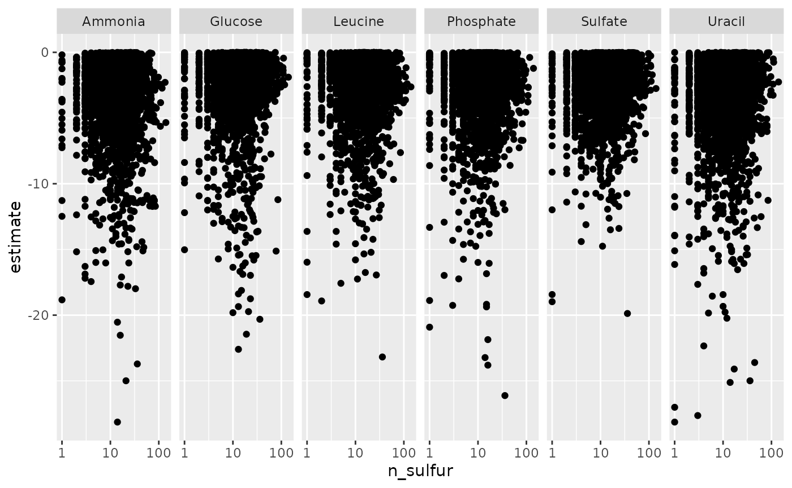

Here is a link to the Rmarkdown for this assignment. Download that and update your name at the top.
You are investigating how the transcription factor MAGIC regulates the expression of two genes WAND and POOF. You use wild-type and mutant lines with different forms of the MAGIC gene and examine the expression of MAGIC, WAND, and POOF. The experiment is a time-course after you add an activator of MAGIC. You collect 4 time points (0, 12, 24, 48 hour) with three biological replicates.
The cells have three mutant forms of MAGIC:
MAGIC-hypo) that is known to reduce its activityMAGIC-siRNA)MAGIC-null)You collect expression data in a qPCR experiment in a 384-well plate (a common format for these experiments). The data in CSV format are available in the class package. One CSV contains expression levels and the other contains sample names coded as cell_time_gene_rt_rep.
This code will give you the path and file names of the CSVs.
# devtools::install_github('rnabioco/eda')
qpcr384_data_csv <- system.file("extdata", "qpcr-data-384.csv", package = 'pbda')
qpcr384_names_csv <- system.file("extdata", "qpcr-names-384.csv", package = 'pbda')Use a function from the readr library–part of the tidyverse–to load the CSV data. You should have two new tibbles.
Inspect these tibbles and make note of their resemblance to a 384 plate. Tidy these tibbles into this format:
# A tibble: 128 x 6
cell time gene rt exp_mean exp_var
<chr> <chr> <chr> <chr> <dbl> <dbl>
1 MAGIC-hypo 0 ACTIN - 1.000000 0.000000e+00
2 MAGIC-hypo 0 ACTIN + 2.333333 4.133333e-01
3 MAGIC-hypo 0 MAGIC - 1.000000 0.000000e+00
4 MAGIC-hypo 0 MAGIC + 13.000000 9.750000e+00
5 MAGIC-hypo 0 POOF - 1.000000 0.000000e+00
6 MAGIC-hypo 0 POOF + 981.333333 5.717973e+05
7 MAGIC-hypo 0 WAND - 1.000000 0.000000e+00
8 MAGIC-hypo 0 WAND + 1.000000 1.900000e-01
9 MAGIC-hypo 12 ACTIN - 1.000000 0.000000e+00
10 MAGIC-hypo 12 ACTIN + 10.000000 1.600000e-01
# ... with 118 more rowsNote that this table does not have row and col (they have already been dropped) and that the replicates have been grouped and summarized by their mean (exp_mean) and variance (exp_var).
Thare are two sets of qPCR reactions: one where reverse transcriptase was added to the RNA sample, and one where it was not. The rt variable reflects this by noting samples with + and -.
Make two plots of the distribution of expression values for all sample values. In one plot, use geom_histogram() and facet by rt. In the other plot, change the x-axis scale using scale_x_log10().
What do these plots tell you about the values from the rt == "-" samples?
Create a plot of expression versus time for each of the MAGIC cell types. At this point you can remove the rt == "-" controls. You will need to plot expression value on a log-scale to see differences.
In which cell lines is the expression of WAND affected? In what way? Can you make a statement about this (e.g., XXX is required for YYY expression)?
Compare the data per-cell and per-gene by creating two separate plots by grouping (e.g., using facets) one or the other of those variables. Which of these is more useful to see differences in gene expression?
Normalize the expression data dividing each of the MAGIC, WAND, and POOF value by the ACTIN values. You will need to use spread() to rearrange the data for calculation, and then gather() to reformat for plotting. Re-create the plots from question 4 with this normalized data. Did your interpretation change?
Explore the brauer_gene_exp and yeast_protein_prop data sets to address your own hypothesis. Here is an example.
Sulfate limitation of yeast causes downregulation of genes containing high levels of cysteine and methionine residues.
yeast_protein_prop table.## ── Attaching packages ─────────────────────────────────────── tidyverse 1.3.0 ──## ✔ ggplot2 3.2.1 ✔ purrr 0.3.3
## ✔ tibble 2.1.3 ✔ dplyr 0.8.3
## ✔ tidyr 1.0.0 ✔ stringr 1.4.0
## ✔ readr 1.3.1 ✔ forcats 0.4.0## ── Conflicts ────────────────────────────────────────── tidyverse_conflicts() ──
## ✖ dplyr::filter() masks stats::filter()
## ✖ dplyr::lag() masks stats::lag()library(pbda)
sulfurs <- yeast_prot_prop %>%
select(ORF, Cys, Met) %>%
group_by(ORF) %>%
mutate(n_sulfur = sum(Cys, Met)) %>%
ungroup() %>%
rename(systematic_name = ORF) %>%
select(systematic_name, n_sulfur)n_sulfur are correlated.library(broom)
brauer_gene_exp %>%
select(systematic_name, nutrient, expression) %>%
left_join(sulfurs) %>%
select(-systematic_name) %>%
group_by(nutrient) %>%
nest() %>%
mutate(
cor = map(data, ~ tidy(cor.test(.$n_sulfur, .$expression)))
) %>%
select(nutrient, cor) %>%
unnest() %>%
arrange(-estimate)## Joining, by = "systematic_name"## Warning: `cols` is now required.
## Please use `cols = c(cor)`## # A tibble: 6 x 9
## # Groups: nutrient [6]
## nutrient estimate statistic p.value parameter conf.low conf.high method
## <chr> <dbl> <dbl> <dbl> <int> <dbl> <dbl> <chr>
## 1 Ammonia 0.127 23.2 5.00e-118 32989 0.116 0.137 Pears…
## 2 Leucine 0.0449 8.16 3.48e- 16 33027 0.0341 0.0556 Pears…
## 3 Phospha… 0.0420 7.63 2.47e- 14 32919 0.0312 0.0528 Pears…
## 4 Glucose 0.0367 6.68 2.49e- 11 32987 0.0260 0.0475 Pears…
## 5 Sulfate 0.00680 1.23 2.18e- 1 32751 -0.00403 0.0176 Pears…
## 6 Uracil -0.0313 -5.67 1.44e- 8 32858 -0.0421 -0.0205 Pears…
## # … with 1 more variable: alternative <chr>library(broom)
models <- brauer_gene_exp %>%
select(systematic_name:expression) %>%
group_by(systematic_name, nutrient) %>%
nest() %>%
# head() %>%
mutate(
model = map(data, ~ tidy(lm(expression ~ rate, data = .x)))
) %>%
select(-data)## Warning in summary.lm(x): essentially perfect fit: summary may be unreliable# Now unnest and grab relevant data, i.e. genes with negative slopes
models <- models %>%
unnest() %>%
filter(term == "rate" & estimate < 0 & !is.na(nutrient)) %>%
select(systematic_name, nutrient, estimate)## Warning: `cols` is now required.
## Please use `cols = c(model)`## Joining, by = "systematic_name"##
## ********************************************************
## Note: As of version 1.0.0, cowplot does not change the
## default ggplot2 theme anymore. To recover the previous
## behavior, execute:
## theme_set(theme_cowplot())
## ********************************************************ggplot(combined, aes(x = n_sulfur, y = estimate)) +
geom_point() +
scale_x_log10() +
facet_grid(~nutrient)